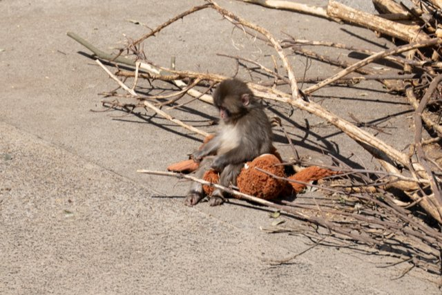
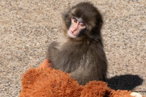

A tiny monkey clutching a stuffed toy has captured hearts around the world. Cleopatra—a young macaque living at Ichikawa City Zoo—has become an unexpected internet star after videos of her emotional rejection began circulating online.
The seven-month-old monkey's story is both heartbreaking and hopeful. After being abandoned by her mother and struggling to bond with her troop, Cleopatra found comfort in an unusual companion—a plush orangutan toy provided by her keepers.
Her touching attempts to cope with loneliness have resonated with millions of viewers and sparked global conversations about animal emotions, care in zoos, and the resilience of young animals.
Grab your nearest stuffed toy and try not to cry—we're here to learn about the adorable Cleopatra the Monkey.
Who is Cleopatra the Monkey?
Cleopatra is a baby Japanese macaque living at Ichikawa City Zoo, a small municipal zoo located just east of Tokyo in Chiba Prefecture.
Born in 2025, Cleopatra was rejected by her mother shortly after birth, at which point the zookeepers stepped in to hand-raise her to ensure she survived. While staff cared for her basic needs, Cleopatra still faced a difficult challenge: integrating into the troop of other macaques at the zoo.
Like many social primates, Japanese macaques rely heavily on family bonds and group relationships. Without a mother to guide and protect her, Cleopatra initially struggled to find her place within the troop.
Why is Cleopatra the Monkey viral?

Cleopatra became viral after videos showed the young macaque clinging to a stuffed orangutan toy given to her by her caretakers. In the clips shared widely on social media, Cleopatra can be seen carrying the toy everywhere—hugging it, grooming it, and even turning to it for comfort after negative interactions with other monkeys.
In several viral moments, older macaques push her away or ignore her, and Cleopatra immediately runs back to her stuffed companion. The contrast between the small monkey seeking comfort and the toy standing in for a missing mother struck a powerful emotional chord with viewers. Millions of people online have described the scenes as both heartbreaking and deeply touching.
Animal behavior experts note that such comfort objects can help young animals cope with stress or separation, much like security blankets or stuffed toys help human children.
Why was Cleopatra the Monkey abandoned?

Zookeepers believe Cleopatra was abandoned by her mother shortly after birth due to several possible factors.
One likely cause was an intense summer heatwave around the time Cleopatra was born. Extreme heat can place stress on animals and affect maternal behavior. Throw into this mix that her mother was also reportedly a first-time parent, meaning she may have lacked the experience needed to care for a newborn.
In addition, the social environment within a captive troop can be complicated. Competition and hierarchy among macaques sometimes lead to inexperienced mothers struggling to raise their young successfully.
How is Cleopatra the Monkey doing now?
The question we're all asking. According to zoo staff, she's now integrated with the troop!
Cleopatra is reportedly making steady progress. She is gradually learning social cues from other macaques and interacting more with her troop. Other monkeys in the troop have even been seen grooming Cleopatra, a key symbol of integration in the troop's social hierarchy.
Over time, she is relying less on the stuffed toy as she becomes more confident, though she can still be seen walking hand-in-hand with her orangutan at times.
Where is Cleopatra the Monkey?
Cleopatra lives at Ichikawa City Zoo, located in Ichikawa City in Chiba Prefecture, just across the Edo River from Tokyo. The zoo is a small community zoo known for its family-friendly atmosphere and for housing animals native to Japan, including Japanese macaques, red pandas, and various birds and small mammals.
Cleopatra continues to live with the macaque troop at the zoo, where keepers are carefully monitoring her development and social progress.
How to get to Ichikawa City Zoo

From Tokyo, visitors can reach Ichikawa by local JR train lines in about 30–40 minutes. From the nearest station, buses or taxis provide access to the zoo.
The easiest way to reach Ichikawa from faraway Japanese cities is the Tokaido Shinkansen, which connects key destinations including Tokyo, Nagoya, Kyoto, and Osaka.
Whether you're visiting Mount Fuji, exploring Kyoto's temples, or heading to Osaka for street food, the line offers unmatched speed, comfort, and reliability—meaning you'll always have the opportunity to meet Cleopatra.
Going to see Cleopatra the Monkey?
Cleopatra the Monkey's story highlights both the challenges and resilience of young animals. Despite being abandoned by her mother and struggling to fit in with her troop, the tiny macaque has shown remarkable adaptability—with a little help from her caretakers and her unusual stuffed companion.
As she continues growing and learning social behaviors from other monkeys, Cleopatra's journey is gradually shifting from one of heartbreak to one of hope.
See this story come to life at Ichikawa City Zoo, where Cleopatra is likely waiting for your visit—orangutan in hand.
Cleopatra the Monkey FAQs
What is going on with Cleopatra the Monkey?
Over the past few weeks, a baby macaque at Ichikawa City Zoo named Cleopatra has taken the internet by storm. Viral videos show the young monkey being pushed away by older members of her group and seeking comfort by hugging a stuffed orangutan toy given to her by zookeepers.
How old is Cleopatra the monkey?
At the time of writing, Cleopatra is about seven months old. She was born in 2025 and quickly gained global attention after videos of her with her stuffed toy went viral online.
What kind of monkey is Cleopatra?
Cleopatra is a Japanese macaque, a species also known as the snow monkey. These monkeys are native to Japan and are famous for their social behavior and adaptability to cold climates.
Why does Cleopatra carry a stuffed toy?
Zookeepers introduced the stuffed orangutan toy as a comfort object after Cleopatra was abandoned by her mother. Similar to how human children use stuffed teddies, the toy helps reduce stress and provides emotional reassurance.
Can visitors see Cleopatra at the zoo?
Yes. Visitors to Ichikawa City Zoo may be able to see Cleopatra with the macaque troop, though animal viewing depends on weather, activity levels, and the zoo's daily schedule.
Why are Japanese macaques called snow monkeys?
Japanese macaques are often called snow monkeys because they live farther north than any other non-human primate and are well adapted to cold environments, including snowy mountain regions of Japan.